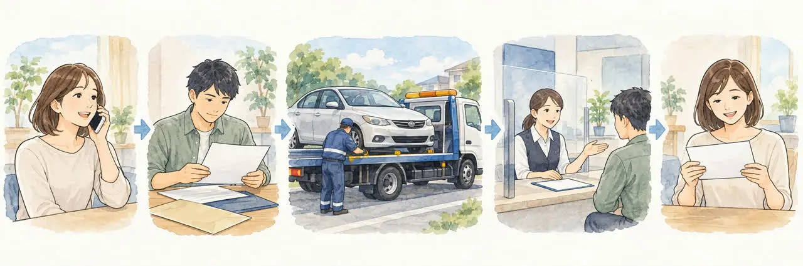

足立区で車を手放したい方へ
足立区で廃車するなら知っておきたいこと
手続きの場所と、引き取りの流れ
公開
こんにちは、東京都足立区江北で自動車解体・廃車買取をしている「大崎商店 環七店」です。
「足立区で車を廃車にしたい。どこで手続きをするの？」
「区役所に行けばいい？」
「引き取りから手続きが終わるまで、どんな流れ？」
足立区にお住まいの方から、こんなご相談をいただきます。
結論からお伝えすると、普通車・四輪の軽自動車の廃車手続きは、区役所ではなく、普通車は運輸支局等、軽自動車は軽自動車検査協会で行います。足立区に使用の本拠がある車は、普通車が足立自動車検査登録事務所、軽自動車が同協会の足立支所です。自動車税は東京都、軽自動車税や印鑑証明書は区役所等が関わります。
この記事では、足立区で廃車にするときの、手続きの場所と、全体の流れを、やさしくご紹介します。後半では、足立区の大崎商店の場合もご紹介します。
① 足立区の、廃車の窓口

普通車・四輪の軽自動車の廃車は、基本的に車検証に記載されている「使用の本拠の位置」を管轄する窓口へ申請します。現在の住所や登録情報に変更がある場合は、申請先と追加書類を事前に確認してください。使用の本拠が足立区の場合は、次の窓口です。
| 比較項目 | 普通車 | 軽自動車 |
|---|---|---|
| 窓口 | 足立自動車検査登録事務所 | 軽自動車検査協会 東京主管事務所 足立支所 |
| 所在地 | 足立区南花畑5丁目12番1号 | 足立区宮城1丁目24番20号 |
| 受付時間 | 8:45〜11:45、13:00〜16:00 | 8:45〜11:45、13:00〜16:00 |
| お休み | 土曜・日曜・祝日・12/29〜1/3 | 土曜・日曜・祝日・12/29〜1/3 |
- 区役所では、普通車や軽自動車（四輪）の廃車はできません
- 受付は、平日の日中だけです。午後は16時までのため、午後に書類がそろうと、手続きは翌日以降になることがあります
- 3月、特に下旬は、運輸支局の窓口が大変混雑します。 期限がある場合は、月末ぎりぎりにならないよう早めに準備してください
- 受付時間や休業日は、変わることがあります。お出かけ前に、各窓口の案内をご確認ください
必要書類と申請の流れは、車の状態や手続きの種類によって異なります。手続きにかかる日数は、廃車手続きはどれくらいで終わる？日数の目安と、早く終わらせるコツの記事をご覧ください。
② 税金の窓口は、「都税」と「区の税」で別です
毎年かかる自動車税・軽自動車税は、車の種類によって窓口が違います。下の表は、使用の本拠・定置場が足立区にある場合の説明です。
| 比較項目 | 普通車 | 軽自動車 |
|---|---|---|
| 税金 | 自動車税 | 軽自動車税 |
| 課税するところ | 東京都（都税） | 足立区（区の税） |
| 年度の途中で廃車すると | 抹消登録の翌月から年度末まで減額。納付済みなら還付対象 | 月割りでの還付はありません |
- 普通車の自動車税は、東京都の税金です。還付がある場合は、都から通知が届きます
- 軽自動車税は、足立区の税金です。足立区の案内では、軽自動車税は、月割・日割課税の制度がありません
- どちらも、原則として毎年4月1日時点の所有者にかかります。販売店などが所有権を留保している場合は、使用者が納税義務者になります。もう乗らない車は、3月中に抹消・返納の手続きを完了することが、新年度分の課税を避けるための目安です
くわしくは、廃車にするとお金は戻ってくる？自動車税・重量税・自賠責の還付金と、軽自動車は自動車税の還付がない？普通車との違いと、損しない廃車のタイミングの記事をご覧ください。
③ 足立区で取る書類：印鑑証明書など
普通車の一時抹消登録・永久抹消登録を紙の書類で申請する基本的なケースでは、所有者の印鑑証明書（申請日に発行から3か月以内）が必要です。軽自動車の通常の廃車では、印鑑証明書・実印は不要です。
足立区で印鑑登録している方の取得方法は、次のとおりです。取得前に、依頼先へ必要な通数と申請予定日を確認してください。
- 窓口：区内の区民事務所（16か所）や、区役所南館1階の戸籍住民課で、申請します
- 窓口で必要なもの：印鑑登録証。実印や本人確認書類だけでは交付を受けられません
- 窓口の手数料：1通300円（2026年10月確認）
- コンビニ交付：利用者証明用電子証明書のあるマイナンバーカード等の条件を満たせば、1通150円です。利用方法と手数料の公式案内を確認してください
- オンライン申請：マイナンバーカードと印鑑登録証の番号等を使って申請し、住民登録の住所で郵送受領する方法です。1通300円に郵送料が別途かかります。急ぐ場合は到着までの日数に注意してください。足立区のオンライン申請案内をご覧ください
- 代理人の窓口申請：本人の印鑑登録証を持参し、本人の住所・氏名を正確に記入します。印鑑登録そのものの代理申請とは手続きが異なります。足立区の交付案内をご確認ください
※印鑑登録をしている市区町村が足立区でない場合は、そちらの市区町村で取ります。
車検証と今の住所・氏名が違う場合は、住民票や戸籍の附票などが必要になることがあります。取る前に、依頼先に確認しましょう。くわしくは、廃車に必要な印鑑証明書は何通？いつまでのものが使える？と、車検証と今の住所・名前が違う場合の廃車手続きの記事をご覧ください。
④ 引き取りから、廃車が終わるまでの流れ

足立区で廃車にするときの、一般的な流れは、次のとおりです。
- 依頼先に相談する：車検証（または自動車検査証記録事項）、車の状態、置いてある場所を伝えます
- 書類をそろえる：車検証、ナンバープレート、印鑑証明書（普通車）など。くわしくは、廃車に必要な書類チェックリスト（普通車）の記事をご覧ください
- 車を引き取ってもらう：動かない車は、レッカーや積載車で運びます
- 廃車手続きと重量税の還付申請：普通車は一時抹消登録、解体後の永久抹消登録・解体届出など。軽自動車は一時使用中止、解体返納・解体届出などです。重量税の還付は、適正な解体後の手続きと同時に申請し、制度上の車検残存期間が1か月以上あることなどが条件です。くわしくは、「一時抹消」と「永久抹消」の違いをやさしく解説｜廃車はどちらを選ぶ？の記事をご覧ください
- 保険の手続きと完了の確認：自賠責保険の解約、任意保険の解約・車両入替・中断証明書など、必要な手続きを保険会社に確認します。廃車だけでは保険は自動解約されません。依頼先には廃車の完了確認書類と、還付金・返戻金の扱いを確認しましょう。くわしくは、事故を起こしたときの保険の使い方の記事をご覧ください
動かない車や、事故で動かなくなった車の場合は、足立区で事故車を買い取ってもらうには？動かない車でも大丈夫の記事をご覧ください。
よくある質問
Q. 足立区役所で、廃車の手続きはできますか？
A. 普通車や軽自動車（四輪）の廃車は、区役所ではできません。普通車は運輸支局等、軽自動車は軽自動車検査協会で行います。原付バイクなどの廃車は、市区町村の窓口で行う仕組みです。くわしくは、足立区の案内をご確認ください。
Q. 土日に、廃車の手続きはできますか？
A. 運輸支局や軽自動車検査協会の窓口は、土日・祝日がお休みです。平日の日中に、手続きを行います。
Q. 足立区外に住んでいます。足立区の窓口で、手続きできますか？
A. 廃車の手続きは、車検証に記載の「使用の本拠の位置」を管轄する窓口で行います。足立自動車検査登録事務所と軽自動車検査協会 足立支所は、足立区のほか、台東区・墨田区・江東区・荒川区・葛飾区・江戸川区も管轄しています。住所等に変更がある場合は、申請先を事前に確認してください。
Q. 自分で窓口に行く必要はありますか？
A. 手続きを依頼する会社が代行する場合は、お客様が窓口に行く必要は、ありません。代行の範囲と、お客様に準備していただくものは、依頼先によって異なります。
Q. 印鑑証明書は、どこで取れますか？
A. 印鑑登録をしている市区町村で取ります。足立区の場合は、区民事務所や、区役所南館1階の戸籍住民課などです。
Q. 足立区の税金の通知書が、車を手放したあとも届きました。
A. 廃車の手続きが終わっているかを確認してください。普通車は、東京都の都税、軽自動車は、足立区の税の窓口に、お問い合わせください。
大崎商店の場合：足立区での廃車
ここからは、足立区の大崎商店の場合をご紹介します。
大崎商店は、足立区江北（環七店）と、足立区入谷（入谷店）で、車の解体・廃車買取を行っているお店です。車の引き取り・買取に伴う手続きをお受けしており、車をお預かりせず、書類手続きだけを代行する依頼は受け付けていません。
- 引き取り：廃車・事故車・不動車を引き取っています。足立区内は引き取り無料です。足立区外の無料対応条件は、下の費用案内でご紹介します。くわしくは、出張引き取りの対応エリア｜無料で伺える範囲は？の記事をご覧ください
- 解体：解体の認可を受けた入谷店で、解体します
- 抹消登録の手続き：環七店から、普通車の運輸支局（足立自動車検査登録事務所）までは、車で約20分、軽自動車検査協会 足立支所までは、約15分の場所にあります（目安）。一時抹消は、書類がそろっていれば、引き取りから原則1週間以内が目安です。午後の引き取りや連休などで変わるため、期限がある場合は事前に確認してください。永久抹消は、入谷店の作業状況によって、日数が変わります
- お電話：引き取りやご相談のお電話は、環七店がスムーズです
車として再販売する車は一時抹消、解体する車は永久抹消（先に一時抹消済みなら解体届出）を行います。軽自動車は、状況に応じた返納・解体届出の手続きを行います。
お電話の際は、次の内容をお伝えください。
- 車検証（または自動車検査証記録事項）の内容
- 車種・車の状態・車が置いてある場所
- 「いつまでに終わらせたい」という、ご希望の期限
大崎商店では、
- 解体費用・手続き代行費用・印紙代は別請求しません
- 足立区内は、引き取り無料
- 足立区外も、買取価格がつかない車は、環七店から片道約30分圏内は引き取り無料
- 買取価格がつく車は、圏外でも、所在地と車の状態によっては無料で引き取り（事前にご案内します）
- 車のお持ち込みは、どこからでも歓迎（基本は環七店。日時は、事前にお電話でご相談ください）
足立区の廃車のことも、大崎商店にご相談ください
電話で相談する 03-3854-4141メールで相談する（フォーム）ご来店の前に、お電話ください。引き取りなどで外出していることもあり、お電話いただければ、即日対応できるかをご案内できます。
大崎商店 環七店
電話：03-3854-4141
〒123-0872
東京都足立区江北7丁目1−3
営業時間：月〜土 10:00〜18:00
休業日：日曜・祝日
環七沿い／舎人ライナー
西新井大師西駅
大崎商店 入谷店
電話：03-3899-2837
〒121-0836
東京都足立区入谷7丁目5−11
営業時間：月〜土 9:30〜17:30
休業日：日曜・祝日・第2土曜
引き取りやご相談のお電話は、環七店がスムーズです。お電話の際は、「足立区で廃車したい」とお伝えください。車検証（または自動車検査証記録事項）をお手元にご用意いただくと、ご案内がスムーズです。
※掲載のイラストはAIで作成したイメージです。実際の店舗・役所の窓口を撮影したものではありません。
参考：関東運輸局 東京運輸支局・自動車の検査（車検）・登録／軽自動車検査協会・東京主管事務所足立支所／足立区・印鑑登録証明書／足立区・軽自動車税／東京都主税局・自動車税のよくある質問／関東運輸局・足立自動車検査登録事務所の所在地・管轄／国税庁・重量税の廃車還付